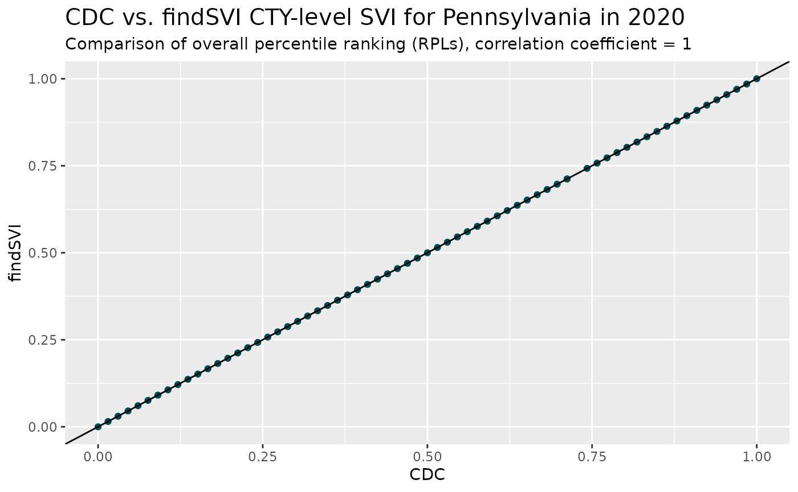
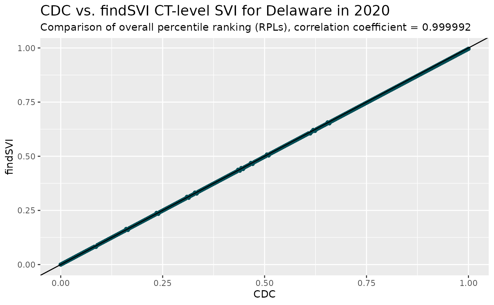

Validation of SVI results
SVI variables and Reproducing CDC/ATSDR SVI
Source:vignettes/articles/svi-validation.Rmd
svi-validation.RmdThis is a quick reference and validation of our functions to calculate SVI from Census data, where we’ll include the tables for retrieving census variables and normalizing data, as well as a comparison between findSVI calculations and CDC/ATSDR SVI data.
SVI variables and Census variables
For each year between 2012-2021, we include a dataset in the package
containing the SVI variable names, their theme group and corresponding
Census variable(s) and calculation formula. The information is extracted
from CDC/ATSDR
SVI documentation for the years available, and modified for the
years that the CDC/ATSDR SVI database does not cover (if Census variable
names are different, otherwise information of the adjacent year is
used). These datasets are documented in
?variable_calculation.
datasets <- list(
variable_e_ep_calculation_2012,
variable_e_ep_calculation_2013,
variable_e_ep_calculation_2014,
variable_e_ep_calculation_2015,
variable_e_ep_calculation_2016,
variable_e_ep_calculation_2017,
variable_e_ep_calculation_2018,
variable_e_ep_calculation_2019,
variable_e_ep_calculation_2020,
variable_e_ep_calculation_2021
)
process_file <- function(file) {
data_tmp <- file
year_info <- colnames(file)
data_tmp %>%
mutate(year = str_sub(year_info[1], 2, 5), .before = 1) %>%
rename(SVI_var = 2,
Theme = 3,
Census_var = 4)
}
all_datasets <- datasets %>%
map(process_file) %>%
list_rbind()Here we show all the datasets as one table for easier search and reference, with the columns represent:
year: The year that the other columns of data correspond to.
SVI_var: SVI variable names (“E_xx” for counts, “EP_xx” for normalized values).
Theme: SVI variables are categorized into four themes/domains: 1) Socioeconomic Status, 2) Household Characteristics, 3) Racial & Ethnic Minority Status and 4) Housing Type/Transportation. Theme 0 is used for 3 variables representing total counts, while theme 5 is used for adjunct variables (not included in calculation).
Census_var: Census variable name(s) corresponding to the SVI variable, and/or the calculation using SVI/census variables.
Correlation between CDC/ATSDR and findSVI results
As part of the automatic unit testing in the package, county-level SVI calculations for Pennsylvania for 2014, 2016, 2018 and 2020 are compared with the SVI results downloaded from CDC/ATSDR SVI database and the tests are considered passed when correlation coefficient is higher than 0.9995.
For example, comparing two versions of SVIs for 2020:
#source:https://www.atsdr.cdc.gov/placeandhealth/svi/data_documentation_download.html
#rename FIPS to GEOID
load(system.file("testdata","cdc_pa_cty_svi2020.rda",package = "findSVI"))
#Census API key required for raw data retrieval
pa_cty_raw <- load(system.file("testdata","pa_cty_raw2020.rda",package = "findSVI")) %>%
get()
output <- get_svi(2020, pa_cty_raw)
join_RPL <- cdc_pa_cty_svi2020 %>%
dplyr::select(GEOID,
cdc_RPL_themes = RPL_THEMES,
cdc_RPL_theme1 = RPL_THEME1,
cdc_RPL_theme2 = RPL_THEME2,
cdc_RPL_theme3 = RPL_THEME3,
cdc_RPL_theme4 = RPL_THEME4) %>%
dplyr::mutate(GEOID = paste(GEOID)) %>%
dplyr::left_join(output %>%
dplyr::select(GEOID,
RPL_themes,
RPL_theme1,
RPL_theme2,
RPL_theme3,
RPL_theme4)) %>%
tidyr::drop_na() %>% ## remove NA rows
dplyr::filter_all(dplyr::all_vars(. >= 0)) #-999 in cdc data
#> Joining with `by = join_by(GEOID)`
coeff1 <- cor(join_RPL$cdc_RPL_themes, join_RPL$RPL_themes)
join_RPL %>%
ggplot(aes(x = cdc_RPL_themes, y = RPL_themes)) +
geom_point(color = "#004C54")+
geom_abline(slope = 1, intercept = 0)+
labs(title = "CDC vs. findSVI CTY-level SVI for Pennsylvania in 2020",
subtitle = paste0("Comparison of overall percentile ranking (RPLs), correlation coefficient = ", coeff1),
y = "findSVI",
x = "CDC")+
theme(plot.title = element_text(size= 15))
Similarly, we could visualize the two versions of census tract-level SVIs for Delaware for 2020. (For considerations of datasets size in the package, census tract-level SVI comparisons are not included in the automated testing.)
load(system.file("extdata","cdc_de_ct_svi2020.rda",package = "findSVI"))
de_ct_raw <- load(system.file("extdata","de_ct_raw2020.rda",package = "findSVI")) %>%
get()
output2 <- get_svi(2020, de_ct_raw)
join_RPL2 <- cdc_de_ct_svi2020 %>%
dplyr::select(GEOID,
cdc_RPL_themes = RPL_THEMES,
cdc_RPL_theme1 = RPL_THEME1,
cdc_RPL_theme2 = RPL_THEME2,
cdc_RPL_theme3 = RPL_THEME3,
cdc_RPL_theme4 = RPL_THEME4) %>%
dplyr::mutate(GEOID = paste(GEOID)) %>%
dplyr::left_join(output2 %>%
dplyr::select(GEOID,
RPL_themes,
RPL_theme1,
RPL_theme2,
RPL_theme3,
RPL_theme4)) %>%
tidyr::drop_na() %>% ## remove NA rows
dplyr::filter_all(dplyr::all_vars(. >= 0)) #-999 in cdc data
#> Joining with `by = join_by(GEOID)`
coeff2 <- round(cor(join_RPL2$cdc_RPL_themes, join_RPL2$RPL_themes),6)
join_RPL2 %>%
ggplot(aes(x = cdc_RPL_themes, y = RPL_themes)) +
geom_point(color = "#004C54")+
geom_abline(slope = 1, intercept = 0)+
labs(title = "CDC vs. findSVI CT-level SVI for Delaware in 2020",
subtitle = paste0("Comparison of overall percentile ranking (RPLs), correlation coefficient = ", coeff2),
y = "findSVI",
x = "CDC")+
theme(plot.title = element_text(size= 15))